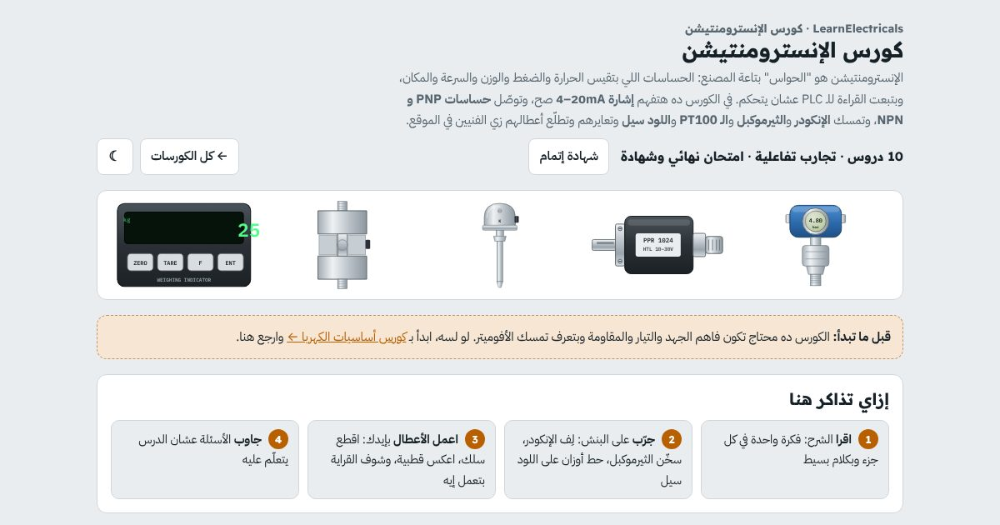

كورس · الحساسات والإشاراتبالعربي
كورس الإنسترومنتيشن
تفهم الحساسات والإشارات اللي في أي مصنع، وتوصّلها وتعايرها وتطلّع أعطالها زي فني الموقع.
أول درسين مفتوحين للكل، من غير حساب

الكورس بالأرقام
10دروس من اللوب لحد المعايرة
4–20mA: الإشارة اللي هتقابلها في كل حتة
1امتحان نهائي وشهادة إتمام
+30تجربة وتمرين وسؤال بيتصحّحوا لوحدهم
الإنسترومنتيشن
إنت هتتعلّم إيه
- تقرا اللوب والتاجات: TT و PT و FT، و PV و SP والرينج
- تحوّل 4–20mA للقيمة الحقيقية وتعرف ليه بتبدأ من 4
- توصّل ترانسميتر 2 و 3 و 4 سلك صح
- تفرّق بين PNP و NPN وتوصّلهم على كارت الـ PLC
- تفهم الإنكودر الإنكريمنتال والأبسليوت وتطلّع أعطاله
- تختار وتوصّل الثيرموكبل و PT100 وتعرف غلطة السلك
- تعاير الميزان وتشخّص اللود سيل بالأفوميتر
- تعمل لوب تشيك وجدول As-found / As-left
المحتوى
الدروس
بالترتيب، وكل درس فيه شرح بسيط وتجارب بإيدك وأسئلة.
- يعني إيه إنسترومنتيشن؟مفتوح للكلاللوب: حساس، ترانسميتر، كنترولر، وصمّام. PV و SP والرينج، وقراءة التاجات TT-101
- الإشارات الأنالوج 4–20mA و 0–10Vمفتوح للكلليه 4 مش صفر، ترانسميتر 2 و 3 و 4 سلك، التحويل للقيمة، وقياس التيار في اللوب
- الحساسات الديجيتالبروكسيميتي وفوتوسيل وليميت سويتش، NO/NC، و PNP و NPN مع كارت الـ PLC
- الإنكودر ١: الإنكريمنتالالقرص والقنوات A و B و Z، الاتجاه، PPR، العدّ x1/x2/x4، السرعة، وأنواع الخرج
- الإنكودر ٢: الأبسليوت والتركيب والأعطالGray code، سنجل ومالتي تيرن، SSI و Profinet، التركيب والشيلد، ولعبة الأعطال
- حساسات الحرارة ١: الثيرموكبلأنواع K و J و T و S، تعويض الطرف البارد CJC، كابل التعويض، الألوان، والأعطال
- حساسات الحرارة ٢: PT100 و RTD و NTC100 أوم على صفر، 2 و 3 و 4 سلك وغلطة السلك، الترانسميتر، و NTC و PTC
- اللود سيل (Load Cell) والميزانالإسترين جيدج والقنطرة، mV/V، 4 و 6 سلك، معايرة الميزان، وتشخيص اللود سيل بالأفوميتر
- الضغط والمستوى والفلوترانسميتر الضغط و DP، المستوى بالضغط والرادار، والفلو ماجنتيك وفورتكس وكوريوليس
- المعايرة والتربل شوتنج + الامتحان النهائيلوب تشيك، جدول As-found / As-left، الكاليبريتور، لعبة أعطال الموقع، والامتحان النهائي
لمين
مين الكورس ده ليه
- لفنيين الصيانة والإنسترومنت في المصانع
- لطلبة هندسة كهربا وميكاترونيكس وتحكم
- لو شغال كهربا وعايز تدخل مجال الإنسترومنتيشن
- لو بتتعامل مع PLC ومحتاج تفهم الإشارات اللي داخلة له
أسئلة بتتكرر
قبل ما تسأل
محتاج خلفية قبل الكورس؟
لازم تكون فاهم الجهد والتيار والمقاومة وبتعرف تمسك الأفوميتر. لو لسه، ابدأ بكورس أساسيات الكهربا.
الكورس عن ماركة معيّنة؟
لأ. الكورس بيشرح الفكرة اللي واحدة في كل الماركات، مع أمثلة من الأجهزة المنتشرة في السوق.
فيه شهادة؟
أيوه. لما تخلّص كل الدروس والامتحان النهائي وانت داخل بحسابك، تطلّع شهادة إتمام بكود تحقق و QR.
الكورس مجاني؟
أول درسين مفتوحين للكل من غير حساب. باقي الدروس محتاجة حساب مجاني تعمله في ثواني بإيميلك.
ينفع على الموبايل؟
ينفع. كل البنشات والتجارب شغالة على الموبايل والتابلت والكمبيوتر.
جاهز تبدأ الإنسترومنتيشن؟
أول درسين مفتوحين للكل، من غير حساب. ادخل دلوقتي وكمّل على راحتك، وتقدّمك بيتحفظ.